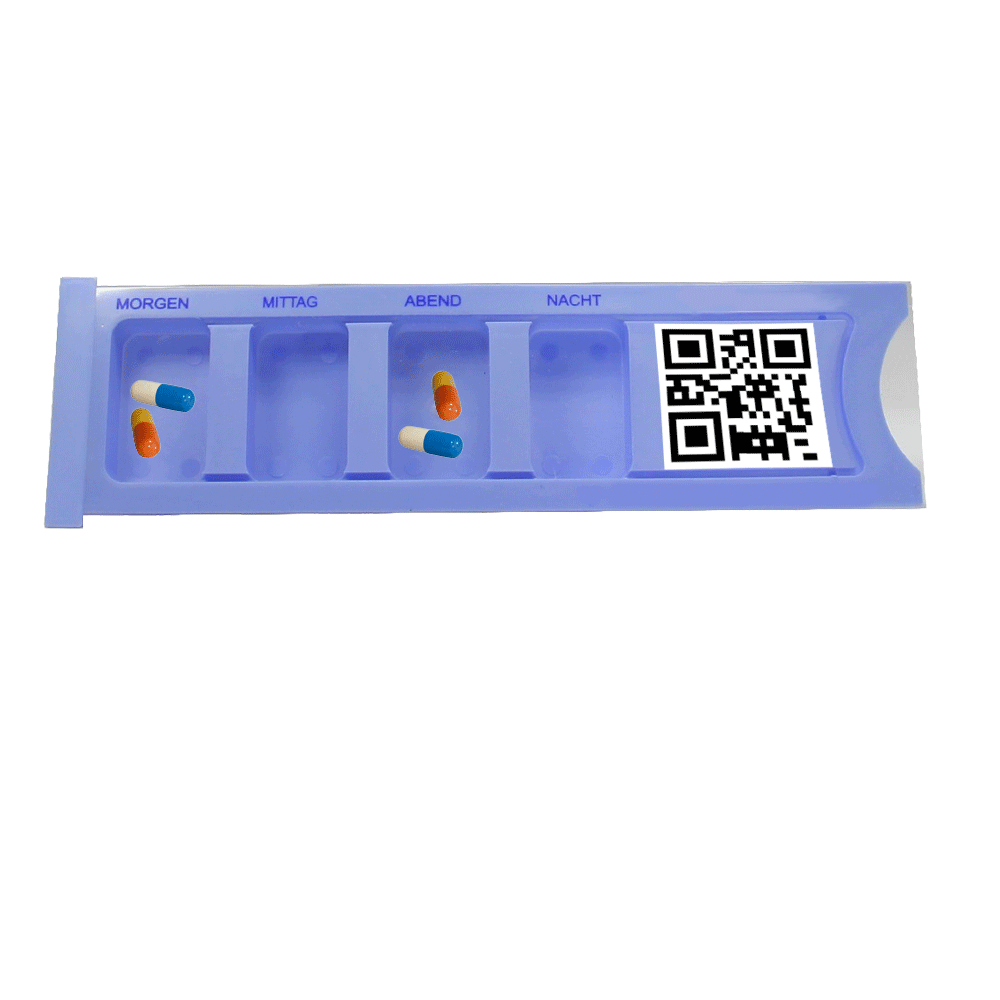

|
Einzelscan
Die Funktion des Einzelscans ermöglicht Ihnen, einen Scan ohne Abgleich durchzuführen, um so lediglich Informationen über das gescannte Objekt zu erhalten. Sie können sowohl die Codes auf den Patientenarmbändern als auch auf den Dispensersn oder Medikamenten scannen. Dargestellt werden die Informationen in einer Tabellenansicht, für die Sie das Smartphone quer halten müssen. Wenn Sie beim Scannen eine Fehlermeldung erhalten so wurde: 1. Möglichkeit: Kein gültiges Objekt gescannt. 2. Möglichkeit: Es handelt sich um ein Medikament mit keinem konformen Code.  |